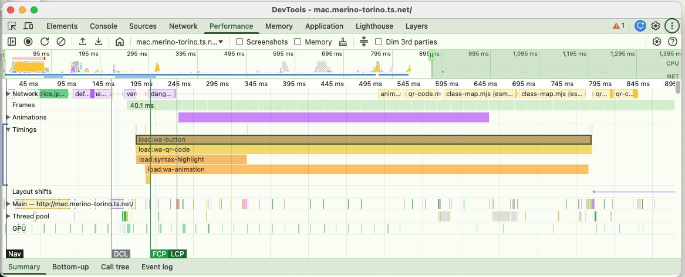
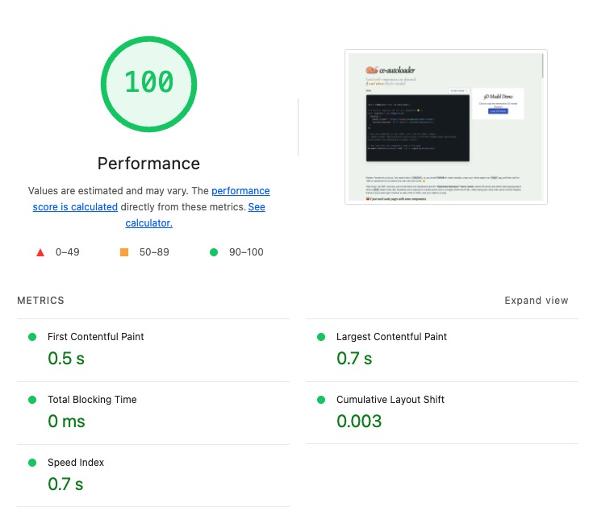

ce-autoloader
ce-autoloader
Load web components on demand
if and when they're needed.
About
You need a custom <select> menu. Suddenly,
you've installed 500MB of
node_modules, wrapped your site inside a russian doll
of <App><Provider><Router tags, and
then wait for 1MB of JavaScript to run before the user can
even scroll. 😖
When you try to fix it with SSR, you're now married to the
framework and the
"Hydration Mismatch" horror movie — where
the server and client start arguing about what a
Date object looks like. Now you're paying for a
beefy server just to stringify JSON into HTML, while losing
your mind over cache-control headers that are never quite
right. Content is stale, CPU is 100%, and your wallet is
crying.
I just want static pages with a few interactive components.
If a component isn’t used on the page, it shouldn’t be downloaded.
The fact that this is still hard is kind of absurd.
ce-autoloader is a lightweight library born out of this frustration. It brings Islands Architecture to any site, with any framework.
The special sauce? A shared component catalog, lazy-loading components by default and CSS Animation/View Transitions API to animate them into place.
Fast sites, minimal JavaScript, without over-engineering. 😮💨
- Universal: Anything that exports a Web Component works (React, Vue, Lit, Svelte, etc.).
-
Custom Loader Strategy: Use
loading="visible"orloading="click"to define when a component should be loaded. - Zero Friction: 3kb gzipped without dependencies and no build steps required.
- Shared Catalog: Define your components in a single place and use it across any page.
- Polished Animations: Use the lifecycle states and View Transitions API to animate components as they load/render.
- Smart Scheduling: Batches custom element upgrades into single animation frames to prevent layout thrashing.
Get started
It's just 3 steps. No build tools required (but recommended).
- Install via npm or CDN
- Define your catalog
- Sprinkle your web components on the page
npm install ce-autoloader
import CERegistry from 'ce-autoloader'; const registry = new CERegistry({ catalog: { 'my-component': () => import('./my-component.js') } });
<p>Hello <my-component loading="visible">World</my-component></p>
Documentation
Activation Triggers (Loading Strategies)
The loading attribute defines the
strategy for when a component is
activated. By default, components use the
visible strategy to maximize initial
performance.
- visible (Default)
- Lazy-loading via Intersection Observer. Components are downloaded and defined only when they enter the viewport. Perfect for content "below the fold" to keep initial page weight low.
- click
- Hydrate on demand. The module is fetched when a user clicks or touches the element. Ideal for heavy UI widgets like maps, complex editors, or modal content.
- eager
- Immediate activation. Downloads the module as soon as the loader discovery starts. Use this for critical "above the fold" components like navigation headers or hero sections.
- *custom*
-
Manual/Programmatic mode.
You can specify any custom string (e.g.,
loading="lazy-load") and trigger it manually viaregistry.upgrade('lazy-load').
Dynamic Resolvers (Wildcard Loaders)
Don't want to register 50 components one by one? Pode crer, we got you. Dynamic Resolvers (or Wildcard Loaders) allow you to register a function that "resolves" any tag matching a specific pattern.
In this example, we registered a resolver for
nord-*. The browser sees
<nord-qrcode>, and our
resolver instantly fetches the Correct module
from the CDN.
- No Giant Bundles: Only the components on the page are downloaded.
- Pure HTML Workflow: Add a tag, and it just works.
- Industry Standard: Same pattern used by Vite and Auto-import plugins.
Here is an example of a Wildcard Resolver for the Nord design system:
/** * Pattern-based Resolver for Nord Health components */ "nord-*": async (full_name) => { // 1. Extract the specific component name (e.g., 'qrcode' from 'nord-qrcode') const [, namespace, name] = full_name.match(/^([a-z]+)-(.*)/); // 2. Resolve the module URL (dynamic import) const module = await import(/* @vite-ignore */ `https://esm.sh/@nordhealth/components/lib/${capitalize(name)}.js`); // 3. Define the component if not already registered if (!customElements.get(full_name)) { customElements.define(full_name, module.default); } return module },
Entrance Lifecycle & Transitions
Web components shouldn't just "pop" into existence.
ce-autoloader provides a robust
lifecycle state machine that allows you
to style components as they transition from placeholders
to interactive elements, effectively eliminating
Cumulative Layout Shift (CLS).
The Discovery Lifecycle
Every component moves through three distinct states, that you can style using CSS.
:not(:defined)- Placeholder State. The custom element is in the DOM but the browser doesn't know its behavior yet. Use this to set min-height or aspect-ratio to reserve space on the page.
[ce="loading"]- Activation State. Triggered when the library begins fetching the module. This is the perfect time to show a Skeleton Loader or a progress indicator.
[ce="defined"]- interactive State. The component is defined and upgraded. Use this to trigger a final "fade-in" or entrance animation.
Besides the lifecycle states, view transitions are supported out of the box.
You can use the
view-transition-name attribute to include a
view transition
Native Telemetry & Insights
Performance is built into the core.
ce-autoloader uses the native
User Timing API to provide granular
metrics for every stage of your components' lifecycle.
This allows you to quantify the exact impact of your
loading strategies on Core Web Vitals.

High-resolution markers
Granular metrics for every stage of the lifecycle, visible in the Performance Tab.
- load:tag-name: Fetch duration.
- define:tag-name: JS registration time.
- transition: Animation duration.
Performance Measure
Gather all measurements with
performance.getEntriesByType('measure')
Error Fallbacks & Resilience
The web is a messy place. Network failures, broken
modules, or unexpected errors can happen. Define a custom
fallback component via fallback that will be displayed if a module
fails to load or throws an error during upgrade.
This ensures that your users always have a graceful experience, even when things go wrong.
Configuration
When creating a new CERegistry, you can
pass an options object to customize its behavior.
| Option | Type | Default | Description |
|---|---|---|---|
catalog |
Record<string, string |
function>
|
Required | A mapping of tag names to their respective loader functions or URLs. |
root |
HTMLElement |
document.body |
The root element where the loader will search for custom elements. |
live |
boolean |
true |
Automatically watches the DOM for new custom elements to upgrade. |
transition |
boolean |
true |
Enables the View Transitions API for smooth element upgrades. |
directives |
string[] |
['eager', 'visible', 'click']
|
A list of supported loading triggers. |
defaultDirective |
string |
visible |
The default loading strategy, when it's not specified on the element. |
fallback |
CustomElementConstructor
|
undefined |
A custom element class to use if a component fails to load. |
FAQ (Perguntas Frequentes)
Why web components?
Web components with light-dom&css variables are the GOAT! They are the only way to reuse components across frameworks, and since they're part of HTML spec, they'll still work in 20 years.
Aren't you tired of recreating the same components over and over again every 5 years with the new shiny framework? Let's stop this madness!
⚛️ How to use this with react/vue/svelte/etç?
Vue and Svelte already export web-components out of the box!
Only React is purposefully missing this feature, so you need to use a library like remount or react-to-web-component.
import r2wc from "@r2wc/react-to-web-component" const Greeter = ({ name }) => { return <div>Hello, {name}!</div> } export default r2wc(Greeter, { props: { name: "string", } });
🚀 Wait, isn't this like Astro?
Yes and No. Both use the "Island Architecture" concept to reduce JS bloat, but they are :
- Astro (Server-First): Renders at build time or at server. Great for new apps.
- ce-autoloader (Client-First): Runs at runtime. Great for adding islands to existing Python, Ruby, Elixir or static HTML pages.
🚀 What's the performance like?
Glad you asked! Core Web Vitals with ce-autoloader matches or exceeds SSR frameworks like Next.js. Don't believe me? This is the score of the page you're reading now:
